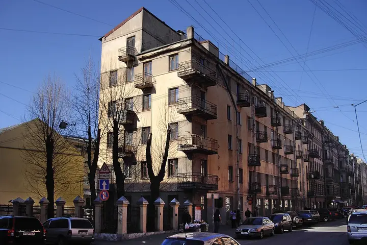

Фото: Potekhin, CC BY-SA 3.0 · Wikimedia Commons
Дом-коммуна, конструктивизм · Центр
Дом-коммуна «Слеза социализма»
Конструктивистский дом 1929–1931 годов с террасой пятого этажа под скатной кровлей и доской Ольге Берггольц на фасаде. Удобный ракурс — с угла Графского переулка.
- ₽ · до 1 500 ₽ на человека
- Новое в каталоге
- в 1 плане
Позвать сюда: Дом-коммуна «Слеза социализма»Открыть в каталоге: Дом-коммуна «Слеза социализма»Маршрут до места: Дом-коммуна «Слеза социализма»
Адрес и детали
- Адрес
- ул. Рубинштейна, 7
Открыть на Яндекс Картах (в новой вкладке) - Метро
- м. Достоевская
- Район
- Центр
- Цена
- до 1 500 ₽ на человека
- Часы работы
- круглосуточно · проверили в ноябре 2026
- Проверено
- работает — проверили в ноябре 2026
Планы с этим местом 1
- Проходные дворы Толстовского дома · Проходные дворы, северный модерн · м. Достоевская
- 4 минуты пешкомДом-коммуна «Слеза социализма» · Дом-коммуна, конструктивизм
- 3 минуты пешкомАрхитектор · Коктейльный бар без вывески
Арки Толстовского дома, конструктивистская «Слеза социализма» и коктейль в «Архитекторе», который легко пройти мимо.
Открыть план: Рубинштейна: дворы Лидваля и бар без вывескиПозвать сюда: Рубинштейна: дворы Лидваля и бар без вывески
Фото: angelius1979, CC BY-SA 3.0 · Wikimedia Commons

Входит в подборки
Похожие рядом

Что ещё рядом


Как позвать
- Выбери план, место или событие — в карточке адрес, цены и маршрут в Яндекс Картах.
- Нажми «Позвать сюда» — соберётся приглашение-игра для свидания или голосование для компании.
- Отправь ссылку в любой мессенджер: тебе ответят, а компания отметит, куда и когда может. Бесплатно и без регистрации.